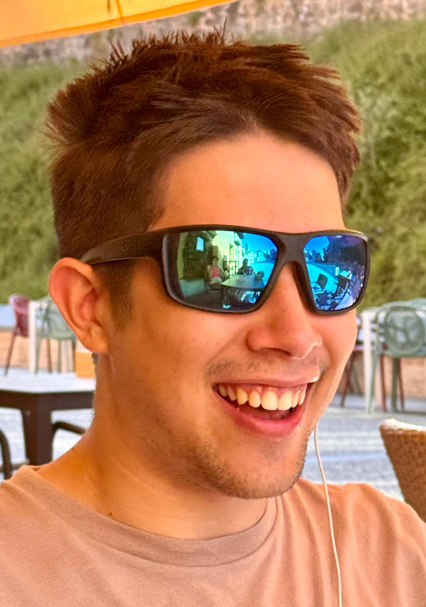

who I am
Hello. My name is Christopher Maldonado. I am a 21-year-old university student at Texas A&M. I was born in Houston, Texas, but I have also lived several years in Spain. I am a little bit of a spaz who has taken a robotics class and several coding classes, and I have a drone pilot commercial license. My fascination with video games has only happened recently, but I work on video games every day.
What motivated me
I like fantasy, reading books about fantasy, and watching fantasy shows. Due to this, I have been fascinated by the creation and development of stories. One day, I woke up and decided that I wanted to create a video game, and I spent the rest of the morning writing down ideas. The story evolved slightly from the original idea, but the original vision has always existed. Developing a video game is something that most young teenagers might think about doing, and I have just brought this vision to life.
